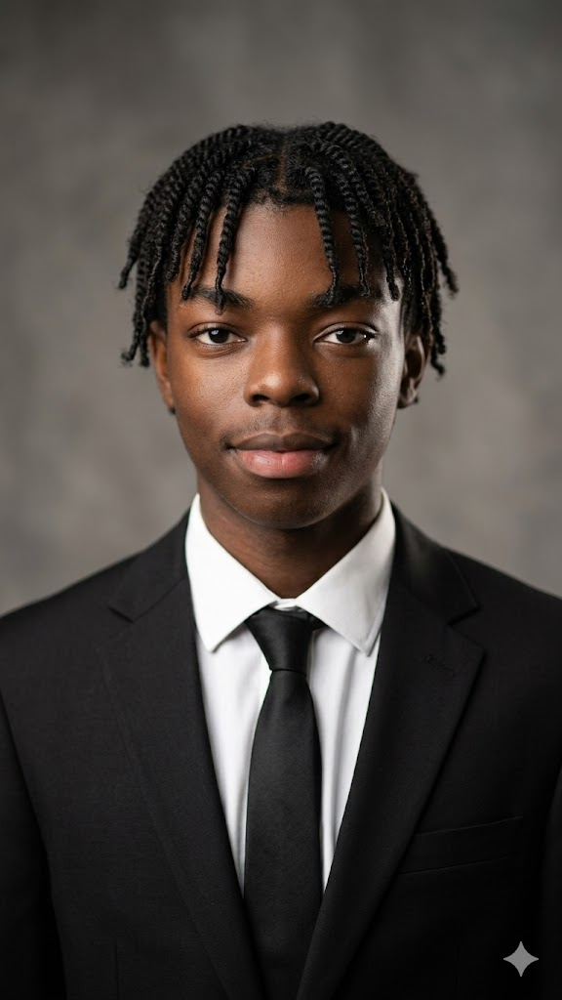

Summary
Hi,
My name is Bruno Elias
I am a 18 year old student that loves every sinlge concept regarding IT

Core Attributes
-
Tech-Fluent:
-
Deeply engaged with modern digital tools, gaming ecosystems, and emerging tech trends.
-
Visionary Mindset:
-
Driven by a desire to contribute to the next wave of technological advancement.
-
Focused Professionalism:
-
Balances a creative, modern aesthetic with a composed and confident corporate demeanor.
-
Adaptable Learner:
-
Highly capable of mastering new platforms and navigating complex technical environments.
Education
High School Certificates and Education
- Cambridge IGCSE Certificate:
- Mathematics
-
Computer Science
-
Business
(Certificate Proof)
-
Cambridge AS & A Level Certificate:
- Mathematics
- Computer Science
(Certificate Proof)
High-Level Education
-
Diploma In IT for Support Services at ROSEBANK COLLEGE
(Certificate Proof)
- Bsc Data Science (Currently doing as of 2026)
Extra Self-Tought SKills
-
Cybersecurity specialized in Penetration testing (Currently doing as of 2026)
-
Full Stack Web Development (Currently doing as of 2026)
Work Experience
As of 2026, I have 0 pratical experience when it comes to professional enviroments,
only theoretical.
SKills
Imma run late for college but the skill im most proud of is my ability to learn new things easily and fast.
Contact Me
{kind=link}
{kind=link}
{kind=link}